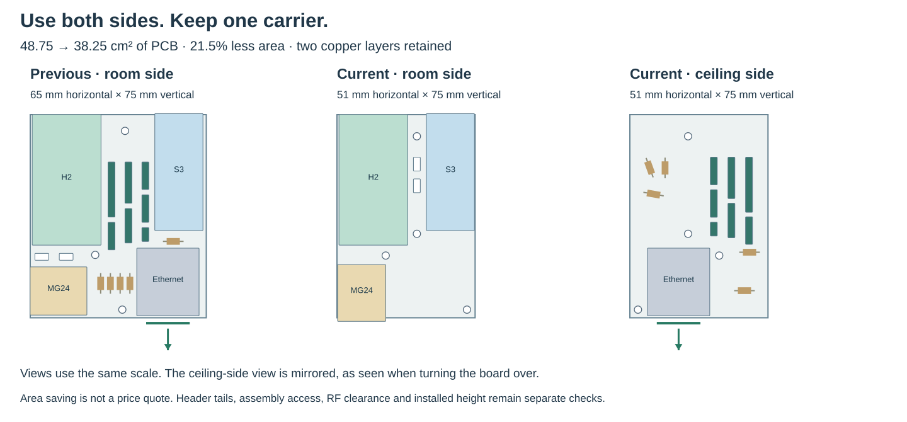
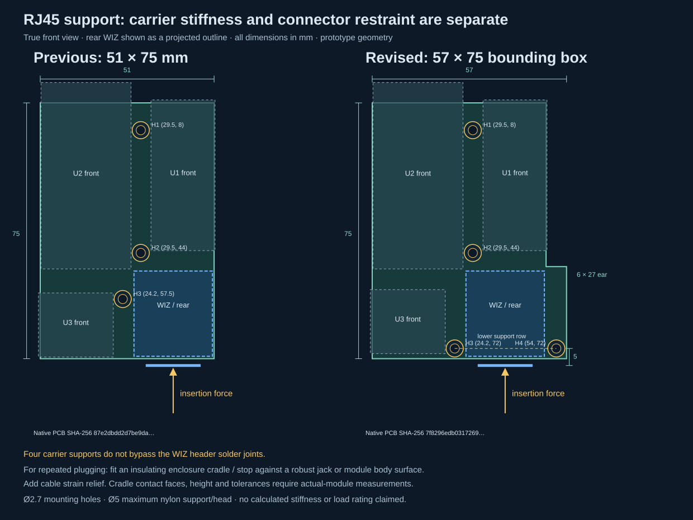
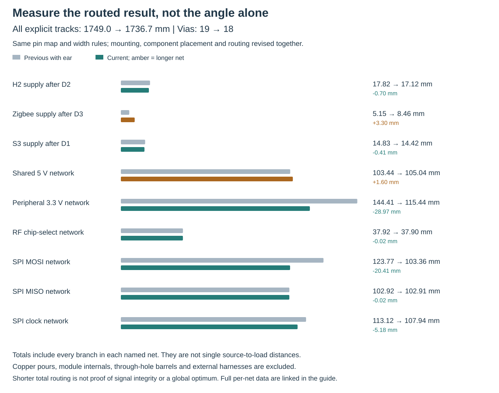
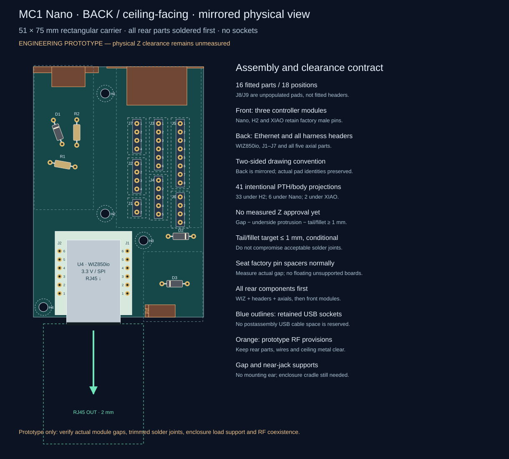
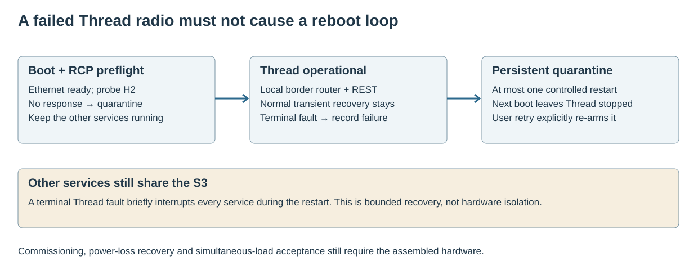
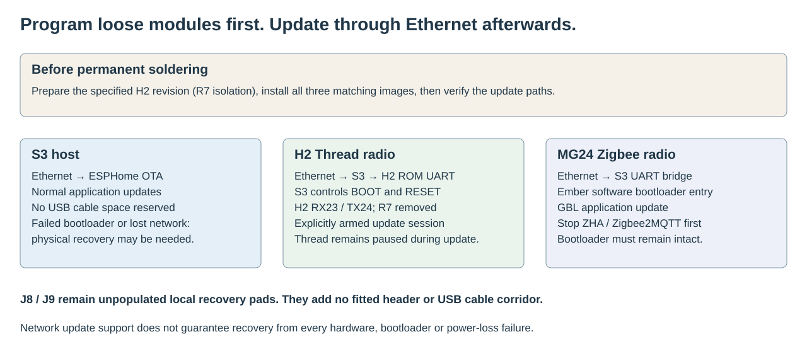

HA RADIO HUB / MC1 / 17 OCTOBER 2026
One carrier.
Finished modules.
Familiar protocols.
S3-Nano-M + H2 + Ember MG24. One Ethernet uplink, local Thread, three active BLE slots and the existing Home Assistant interfaces. Solder factory module pins directly into the carrier.
The selected architecture

The former C0/M0, I0 and D0 paths are historical references. The all-H2 experiment was not selected because its local border-router implementation and Zigbee integration/backup behavior did not meet the compatibility priority.
The compact PCB
The carrier fits within 57 × 75 mm, with 18.2% less PCB area than the historical 65 × 75 mm single-sided carrier and 75.1% less than the original 160 × 100 mm outline. S3, H2 and MG24 face the room. WIZ850io, all seven male harness headers, three diodes and two resistors face the ceiling. This permits selected opposite-side overlap; plated holes, solder tails, underside parts and antenna exclusions still require clearance. USB cable corridors remain absent. Program and verify each controller before soldering. Later updates use the network paths described below.

Both dimensions stay within the 100 × 100 mm size ceiling used by advertised low-cost prototype offers. Component placement now uses both sides of the same two-layer PCB. Two-sided manual soldering needs an explicit assembly order; it does not require four copper layers. A smaller outline does not imply a proportional reduction in the delivered fabrication price. Cost rationale and source offers; shipping and final fabrication specifications need their own quote.
RJ45 faces outward at the bottom edge; its mouth projects 2 mm beyond the carrier. The Ethernet module is on the ceiling-facing side. Keep its plug and latch corridor clear. The electrical pin map and matching firmware are unchanged from the 65 × 75 mm revision.
Support the Ethernet end
The 51 × 75 mm main body now has a 6 × 27 mm right ear for a fourth mounting point. H3 and H4 straddle RJ45 on a line 5 mm behind its mouth. Actual laminate area grows 4.24% from the previous two-sided board; the 57 × 75 mm bounding rectangle grows 11.76%. This is an intentional support improvement, not a lower-price claim.

Placement and routed length
D1 is placed at 250° and R1 at 10° in native CAD coordinates. D2 and D3 move closer to their loads; the other parts retain useful cardinal orientations. Existing holes, polarity, track-width rules and firmware connections are preserved. The new D3 position also requires the documented underside-clearance check beneath XIAO.

All per-net measurements · Routing and mounting review




Top copper and silk · Bottom copper and silk · Native two-layer PCB


What changed after the SMLIGHT review
The host and two independent radios remain. W5500 and CC1101 share one SPI bus with separate chip selects, freeing three host pins. No extra processor, GPIO expander or internal Ethernet hop is introduced. The smaller Nano retains 16 MB flash and 8 MB PSRAM. Source review · Host selection history.

Function and compatibility contract
These are the functions retained in the design. The last column names the hardware acceptance still required; a retained protocol is not a completed bench test.
| Function | Implementation | Retained interface | Bench acceptance |
|---|---|---|---|
| Thread | Local S3 border router + dedicated H2 RCP | IPv6, multicast, HA REST integration | Commissioning, RCP failure/retry, persistent dataset and concurrent traffic |
| Zigbee | XIAO MG24, board-specific Ember NCP | Ember/EZSP family, RTS/CTS, normal ZHA / Zigbee2MQTT path | Pairing, backup/restore, antenna switch and flow control |
| Bluetooth | S3 active ESPHome proxy | Advertisements and three active BLE connection slots | Simultaneous connections with other radios |
| Z-Wave | Existing ZAC93 through WK2132 UART bridge | Regional radio and Z-Wave proxy interface | Lossless byte forwarding, errors, resets and full-size frames |
| 433 MHz RF | Existing CC1101, S3 hardware-timed I/O | RF Airbridge MQTT, native transmit and receive events | Physical timing, reception and transmit regression |
| Presence | Existing LD2450 on native UART | Measurements, configuration and control | Target tracking and all control actions |
| Environment | BME680 in external ventilated pod | Temperature, humidity, pressure, gas resistance | I2C stability and thermal bias |
Programming without USB service gaps
Initial programming is performed before the modules are soldered. Subsequent S3 updates use ESPHome OTA; H2 updates pass through the S3 to its ROM UART; MG24 application updates use its existing Ember bootloader and serial bridge. See the firmware instructions and tested limits.

Actual net endpoints
Generated from the current MC1 CAD design source. References identify carrier pads, not arbitrary clone pin numbers. Module connector labels and physical orientation must match the CAD.
| Net | Carrier endpoints |
|---|---|
| +3V3 | U4.J2.2 · U4.J2.3 · J2.3 · J3.1 · J4.1 · J5.1 · J7.2 · R1.1 · R2.1 |
| +5V | J1.1 · J2.1 · J6.1 · D1.2 · D2.2 · D3.2 |
| +5V_H2 | U2.J1.14 · D2.1 |
| +5V_S3 | U1.JP1.15 · D1.1 |
| +5V_ZB | U3.14 · D3.1 |
| ETH_CS | U1.JP1.11 · U4.J1.5 |
| ETH_INT | U1.JP2.10 · U4.J1.6 |
| ETH_RESET | U1.JP2.9 · U4.J2.5 |
| GND | U1.JP1.14 · U1.JP2.4 · U2.J1.13 · U2.J1.15 · U2.J3.1 · U2.J3.10 · U2.J3.12 · U2.J3.15 · U3.13 · U4.J1.1 · U4.J1.2 · U4.J2.1 · J1.2 · J2.2 · J2.4 · J3.2 · J4.2 · J4.3 · J5.2 · J6.2 · J7.1 · J8.2 · J9.2 |
| I2C_SCL | U1.JP1.5 · J3.4 · J7.4 |
| I2C_SDA | U1.JP1.4 · J3.3 · J7.3 |
| RADAR_RX | U1.JP2.8 · J6.3 |
| RADAR_TX | U1.JP2.14 · J6.4 |
| RF_CS | U1.JP2.6 · J5.6 · R2.2 |
| RF_GDO0 | U1.JP1.7 · J5.7 · R1.2 |
| RF_GDO2 | U1.JP2.5 · J5.8 |
| S3_BOOT_SERVICE | U1.JP1.13 · J9.1 |
| SPI_MISO | U1.JP1.9 · U4.J2.6 · J5.5 |
| SPI_MOSI | U1.JP1.8 · U4.J1.3 · J5.4 |
| SPI_SCK | U1.JP1.10 · U4.J1.4 · J5.3 |
| THREAD_BOOT | U1.JP1.1 · U2.J3.11 |
| THREAD_EN | U1.JP2.15 · U2.J1.2 |
| THREAD_RX | U1.JP2.1 · U2.J3.3 |
| THREAD_TX | U1.JP2.2 · U2.J3.2 |
| ZB_BOOT_SERVICE | U3.1 · J8.1 |
| ZB_CTS | U1.JP2.7 · U3.5 |
| ZB_RTS | U1.JP2.13 · U3.6 |
| ZB_RX | U1.JP2.11 · U3.8 |
| ZB_TX | U1.JP2.12 · U3.7 |
| ZWAVE_RX | J3.5 · J4.4 |
| ZWAVE_TX | J3.6 · J4.5 |
Two-sided direct solder mounting
Follow the assembly and height review and the exact native CAD order. Stock header height is not assumed to make opposing pins safe: measure the assembled gap and trim only while preserving sound through-hole solder joints.

- Identify the exact modules and male header geometry; pre-program and test every controller before soldering.
- On H2 DevKitM-1 v1.3, remove R7 and verify USB-UART TX isolation. Retain the matching RX23/TX24 image.
- Temporarily wire all functions and network updates. The two-sided relocation does not change the pin map or firmware.
- Dry-fit both faces and measure factory spacer gaps, underside parts, opposing tail heights and ceiling-facing plug clearance.
- Follow the CAD solder-access order. Complete, trim and inspect every joint before another module covers it; leave J8/J9 unpopulated.
- Mount controller boards on the room-facing front; fit WIZ850io, all seven male harness headers, D1–D3 and R1–R2 on the ceiling-facing back. Read each side’s own pin-numbered drawing.
- Inspect and test every rail and net for continuity and unwanted contact, including after gentle connector loading. Check loaded Nano VIN and 3V3.
- Use insulating supports sized for the measured rear projection and cables; keep antenna zones free of rear hardware, wires and ceiling metal.
- Commission all services together and verify network updates, interrupted updates, power cycling, thermal behavior and RF range before mounting permanently.
What is removed from manual assembly

Carrier parts and module references
| Reference | Part | Assembly notes |
|---|---|---|
| U1 | Waveshare ESP32-S3-Nano-M 16MB flash 8MB PSRAM | Factory male pins direct solder; JP1.15 VIN via D1; VBUS/3V3 NC; nativeUSB19/20; GPIO0 service; sharedSPI; no sockets |
| U2 | ESP32-H2-DevKitM-1-N4S | RCP/ROM RX23 TX24; remove USB-UART TX series R7 before assembly; native USB retained; 3V3/VBAT NC |
| U3 | Seeed XIAO MG24 pre-soldered 102010690 | External UART PC06/PC07; CTS PC04 RTS PC05; USB probe preserved; 3V3 OUT NC |
| U4 | WIZ850io finished module | Direct factory pins; two1x6 at20.32 rowspacing; RJ45 faces BOTTOM with mouth y=77mm; NO PoE extraction;3.3V only |
| J1 | FUSED ISOLATED 5V INPUT | Offboard assembled active PoE splitter and fused 5V harness. No raw PoE voltage on carrier. |
| J2 | D24V22F3 external assembled buck | Harness interface only; pin1 buckVIN; pin2GND;pin3buckVOUT;pin4GND. Buck remains separate ready module. |
| J3 | DFR0627 WK2132 ready module harness | Harness to DFR0627 I2C and UART1, no WK2132 SMD on carrier. J3.5=module TX1;J3.6=module RX1; IA1=1 IA0=1; register address 0x70, FIFO 0x71; verify physical markings. |
| J4 | ZAC93 ready module harness | Carrier1->ZACpin1;2->pin6;3->pin9;4->pin8RX;5->pin10TX. Different from ZAC physical header layout. |
| J5 | CC1101 ready module harness | 3.3V; GDO0 open-drain TX with external4.7k pullup; GDO2 receiver. |
| J6 | LD2450 radar harness | Carrier3->radarRX;carrier4<-radarTX;5V supply;3.3V data. |
| J7 | BME680 external pod harness | External pod,1GND2VDD3SDA4SCL;I2C pullups on modules;do notaddunreviewedpullups. |
| D1 | 1N5819 USB supply isolation | Cathodepad1->board5V;anodepad2->fused5Vbus. VerifyUSBprogrammingpowerpaths;forwarddropheadroom. |
| D2 | 1N5819 USB supply isolation | Cathodepad1->board5V;anodepad2->fused5Vbus. VerifyUSBprogrammingpowerpaths;forwarddropheadroom. |
| D3 | 1N5819 USB supply isolation | Cathodepad1->board5V;anodepad2->fused5Vbus. VerifyUSBprogrammingpowerpaths;forwarddropheadroom. |
| R1 | 4.7k RF GDO0 pull-up | |
| R2 | 10k RF CS idle pull-up | |
| J8 | XIAO BOOT unpopulated service pads — unpopulated pads | Temporary short D0/PC00 to GND while resetting XIAO for recovery. Normally OPEN. |
| J9 | Nano BOOT unpopulated service pads — unpopulated pads | Normally OPEN; short GPIO0 to GND while pressing Nano RESET for nativeUSB ROM recovery. |
What has actually been checked
The raw PCB report retains 41 intentional rear-pad/front-module courtyard overlaps. A separate exact classifier checks their identities, sides and positions and rejects every other violation. This is not a zero-DRC claim: clearance in height remains a physical measurement requirement.
| Check | Result | Scope / limitation |
|---|---|---|
| Carrier area and function preservation | 51 × 75 mm body + 6 × 27 mm mounting ear; 57 × 75 mm envelope; 3,987 mm² area | Four supports, with the lower pair straddling RJ45. Laminate +4.24% versus the previous two-sided board; bounding rectangle +11.76%. Every pin assignment, seven functions, two copper layers and sixteen fitted electronic items retained. |
| Native KiCad 10.0.6 ERC / DRC | ERC 0; raw DRC 41, exactly classified 41, unclassified 0; unrouted 0; parity 0 | 33 rear-header pads beneath H2, six axial pads beneath S3, two D3 pads beneath XIAO; exact native classification preserves the raw report. Clean generator/SES/manual-route reconstruction agrees. Physical height and solder quality remain unqualified. |
| Mechanical and electrical CAD checks | 24 CAD tests and 31 independent mutation tests; 133 pads and 31 net groups audited | True outline polygon, arbitrary-angle courtyards, native mirrored pads, four accessible supports, physical housings, RF exclusions and acyclic solder access checked. Residual gap ≥1 mm still requires real measurements, including D3 beneath XIAO. No stiffness rating is claimed. |
| Measured routing comparison | 1,942.5231 → 1,748.9646 mm (−9.964%); 35 → 19 vias | Explicit native track centerlines, excluding pours and internal/external wiring. Individual SPI and common supply nets become longer. Power branch routes and several peripheral nets shorten. No global-optimum or electrical-performance claim. |
| CAD / firmware interface contracts | 15 contract tests passed | Every pin assignment identical to the saved 65 × 75 mm ledger; explicit front/back and no-socket checks. Existing shared SPI, three UARTs, flow control, power isolation and H2 ROM UART23/24 retained. |
| Complete S3 firmware | Compiled: 1,731,456-byte OTA image; 163,795 bytes static RAM | ESPHome 2026.9.1 / IDF 5.5.5. Nano 16 MB flash, 8 MB octal PSRAM and three active BLE slots. Each OTA slot has 6,395,008 bytes of margin. Static RAM is not runtime free heap. |
| Bounded Thread recovery, transport and radio update tooling | 55 ASan / UBSan host tests and 2 REST client tests passed | RCP preflight, durable quarantine, explicit maintenance, authenticated temporary H2 UART session, image/partition checks and binary localhost tunnel. Pinned host dependencies install cleanly; both real radio images pass offline planning. Physical updates, power-loss and concurrent-load behavior remain untested. |
| H2 Thread RCP | Rebuilt and verified: 208,928 bytes; RX23 / TX24 | IDF 5.5.5 RCP uses the same pins as the ROM loader. H2 DevKitM-1 v1.3 R7 removal is required to isolate CP2102N TX; verify the purchased revision and continuity. Initial programming uses native USB J4 before assembly. |
| XIAO MG24 Ember NCP + bootloader | Retained verified build; 9 recipe/image tests passed | SiSDK 2025.6.3 / EmberZNet 8.2.3 / EZSP18 image unchanged. Pairing and network restore still require hardware validation. |
| Images and diagrams | Native front/back assembly and copper, support comparison, routing chart and stack section | Current true-outline and angled-component views regenerated. The previous three-support board is preserved as the reproducible routing baseline. Illustrations do not constitute measured vertical fit or connector-force qualification. |
Machine-readable verification summary · Firmware evidence and build instructions · Native CAD and reports · Image provenance
Still requires the real assembly
- Factory pin spacing in Z, trimmed solder-tail height and opposing underside-component clearance
- Soldering access and practical assembly order on purchased module variants
- Loaded Nano VIN operation below the documented external 6 V minimum
- H2 R7 isolation, boot straps and network flashing on actual hardware
- MG24 update interruption and recovery on actual hardware
- RF coexistence, ceiling clearance, range and simultaneous workload reliability
- End-to-end commissioning and network backup/restore
One current layout reduces the choice and assembly burden. Board-specific firmware configuration and UART-transport hardening remain real work; no claim of zero software changes or guaranteed lower power is made.
Manufacturer and implementation sources
The current MC1 documentation is in English. Old hardware images retain their original identity and provenance in the historical archive.